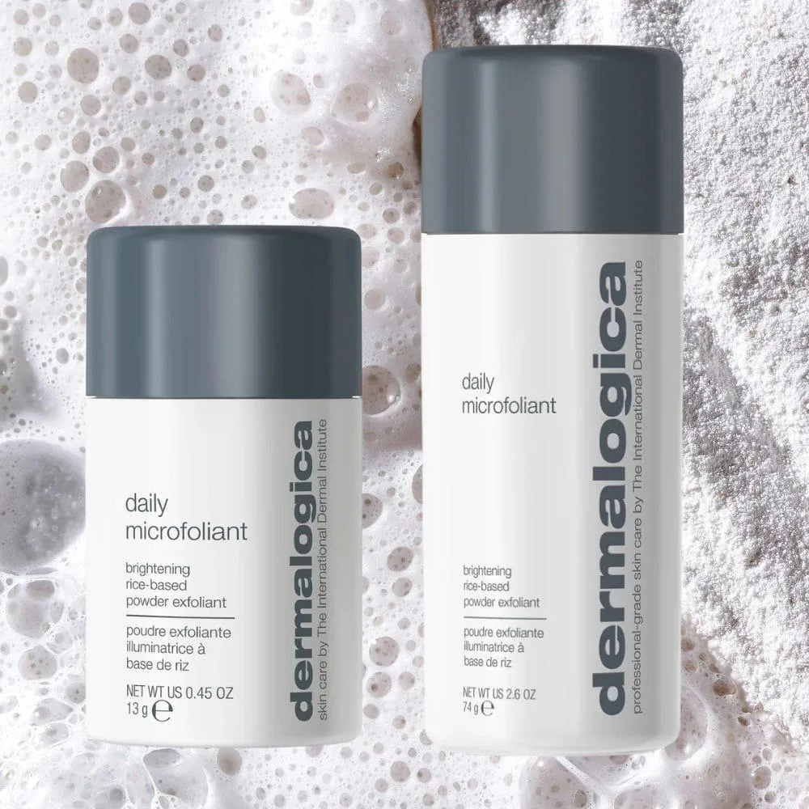

Nous ne réalisons pas simplement un soin visage. Nous analysons, comprenons et accompagnons votre peau dans le temps.

Chaque séance est pensée comme un protocole évolutif, où expertise professionnelle et écoute de votre peau se rencontrent pour des résultats visibles et durables.
Avant chaque soin, nous réalisons une analyse approfondie de votre peau grâce à la méthode Face Mapping®. Cette lecture précise, zone par zone, permet d'identifier les déséquilibres cutanés, les sensibilités et les besoins réels du moment.
Ce diagnostic nous permet d'adapter entièrement le soin : textures, actifs, techniques et intensité. Votre peau évolue — nos soins aussi.
Un soin express sur-mesure pour redonner éclat et confort à la peau en un temps court.
Idéal pour : coup d'éclat, entretien, peau fatiguée.
30 min50 €
Un soin complet entièrement personnalisé pour rééquilibrer la peau et répondre à ses besoins profonds.
Idéal pour : tous types de peau, entretien régulier, première approche Dermalogica.
1 h95 €
Un soin expert pour illuminer le teint et corriger les irrégularités pigmentaires.
Idéal pour : teint terne, taches pigmentaires, manque d'éclat.
1 h130 €
Un soin ultra-doux pour calmer les peaux sensibles et renforcer la barrière cutanée.
Idéal pour : peaux sensibles, réactives, rougeurs.
1 h130 €
Un soin purifiant en profondeur pour rééquilibrer les peaux sujettes aux imperfections.
Idéal pour : acné, points noirs, pores dilatés, peau grasse.
1 h140 €
Un soin expert pour raffermir, lisser et redonner densité à la peau.
Idéal pour : relâchement cutané, rides, perte de fermeté.
1 h 15de 140 € à 170 €
Vous hésitez sur le soin à choisir ?
Nous
vous orientons le jour de votre rendez-vous.